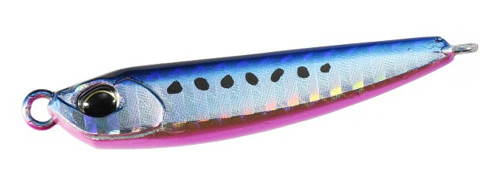
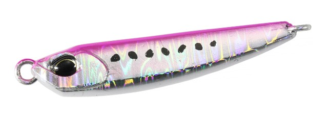
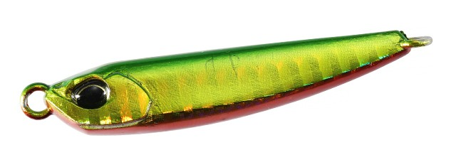
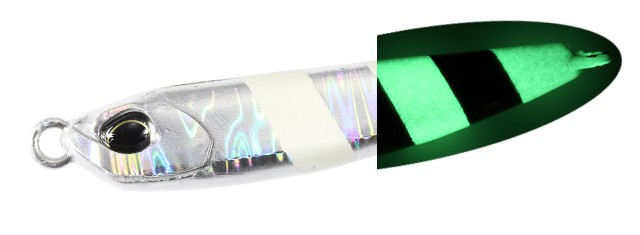

ドラッグメタル ブレッチ
（Drag Metal Bletch）
ドラッグメタル ブレッチはDUO（デュオ）のブレードジグです。
人気メタルジグ「ドラッグメタル」シリーズに登場した、サワラ専用設計のブレードジグ。フックが回らない独立回転ブレードと、VANFOOKのダブルフック「ブレードワークスBGダブル」を標準装備し、歯の鋭いサワラ・サゴシや青物のフッキング率を高めています。

画像出典:DUO公式HP
スペック
- メーカー
- DUO（デュオ）
- タイプ
- ブレードジグ（サワラ専用設計）
- 重さ／全長
- 30g／55mm、40g／60mm、50g／65mm
- フック
- #2（30g）・#1（40g・50g）／ブレードワークスBGダブル
- ターゲット
- サワラ・サゴシ・青物
- 価格
- 1,155円（30g）〜1,265円（50g）（税込）
- 発売
- 2026年
▼今すぐチェック

ドラッグメタル ブレッチの特徴
フックが回らない独立回転ブレードで、サワラをしっかり掛けるブレードジグ
-
フックが回らない独立回転ブレード
ブレードが独立して回転するため、高速巻きでもフックが一緒に回りにくい設計。フックが正しい向きを保つので、サワラの鋭いバイトをしっかりフッキングに持ち込めます。
-
ダブルフック「ブレードワークスBGダブル」を標準装備
VANFOOKのブレードジギング用ダブルフックを採用。後ろから噛みつくサワラ・サゴシに対して、シングルフックよりも掛かる確率を高めています。
-
高速巻きでも疲れにくい低負荷設計
高速域でも巻き抵抗を抑える低負荷設計で、長時間の高速リトリーブでも軽快に巻き続けられます。高速巻きでも破綻しにくいスイムバランスと、立ち上がりの早いブレードアクションで、サワラや青物に強くアピールします。
ドラッグメタル ブレッチの使い方
キャストしてボトム、または狙いのレンジまで沈め、ロッドを構えたまま高速でただ巻きするのが基本。サワラは速い動きに反応しやすいので、まずは速めの一定スピードで巻き続けます。
反応がなければ、巻きスピードを変えたり、巻きの途中でストップを入れてフォールを見せたりして、食わせの間を作りましょう。
ドラッグメタル ブレッチの得意な状況
ボートからのサワラキャスティング（ブレードジギング）や、堤防・サーフからのサゴシ・サワラ・青物狙い。55〜65mmと小粒なボディなので、シラスやカタクチイワシなど小さなベイトを追っているときにも合わせやすいブレードジグです。
小さなベイトを追っている時でも、小粒なボディでサワラやサゴシがよく釣れるのが強みです。
ワンポイント
独立回転ブレードで高速巻きでもフックが回りにくいので、サワラのナブラが出たら、迷わず全速の高速巻きで通すのが基本です。ダブルフックで後ろからのバイトを拾えるぶん、アタリがあっても巻く手を止めずに巻き続けると、そのまま乗りやすくなります。
サワラ狙いならワイヤーリーダーも
サワラ・サゴシの鋭い歯でリーダーごとジグを切られないように、ジグの前に30cm以内の短いワイヤーリーダーを付けておくと安心です。カッターが少ない日は外して、状況に合わせて使い分けましょう。くわしくはサワラのブレードジギング完全ガイドで紹介しています。

重さの使い分け
| 重さ | 全長／フック | 使いどころ |
|---|---|---|
| 30g | 55mm／#2 | 水深の浅い場所や、小さいベイトのときに |
| 40g | 60mm／#1 | サワラキャスティングの基準。迷ったらこの重さ |
| 50g | 65mm／#1 | 水深がある場所や潮が速いとき、遠投したいときに |
水深と潮の速さに合わせて、ボトムが取れる重さを選びましょう。
人気カラー
全8色のラインナップから4色を紹介します（カラー名は公式の表記のまま）。

PHA0621 UVブルピンイワシ青物・サワラ狙いの定番ブルピン。晴れた日の澄み潮や、イワシがベイトのときに。

PPA0119 ピンクイワシピンクベースのイワシカラー。朝夕のマヅメ時や、少し濁りのある日に。

PHA0991 UVミドキングリーンゴールドのUVカラー。濁り潮や曇りの日のアピールに。

PPA1010 UVシルバーゼブラグローシルバーにグローのゼブラ。夜明け前や、深いレンジを探るときに。
画像出典:DUO公式HP
▼今すぐチェック
ドラッグメタル ブレッチに似ているルアー
-
 ドラッグメタル キャスト SSブレード
DUO
詳細はこちら＞
ドラッグメタル キャスト SSブレード
DUO
詳細はこちら＞
同じドラッグメタルシリーズのブレードジグ。28〜80gと重さの幅が広く、ショアから遠投して青物を狙いたいときに。
-
 サムライジグR スピン
ダイワ
詳細はこちら＞
サムライジグR スピン
ダイワ
詳細はこちら＞
30g・40gのコンパクトなブレードジグ。同じくらいのサイズで、フロントアシスト付きで根魚や青物も狙いたいときに。
-
 コロジグブレード
フィッシュアロー×ウロコ
詳細はこちら＞
コロジグブレード
フィッシュアロー×ウロコ
詳細はこちら＞
30〜60gの小粒なブレードジグ。同じくらいのサイズ感で、浮き上がりにくさを重視したいときに。